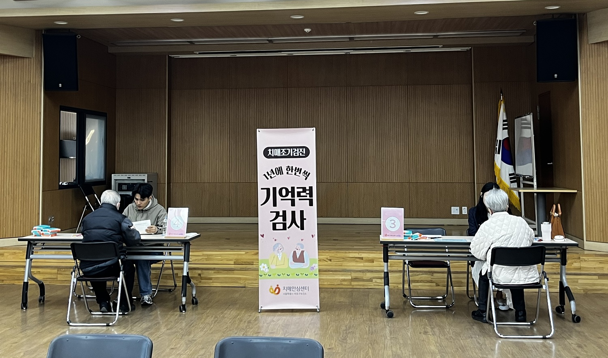

마포구, 9~11월 7개 동주민센터서 무료 기억력 검사 운영
60세 이상 구민 대상, 치매 조기 발견·맞춤형 지원 연계

[시사포커스 / 김재록 기자] 마포구(구청장 유동균)는 어르신의 치매를 조기에 발견하고 체계적인 관리를 돕기 위해 9월부터 11월까지 지역 내 7개 동주민센터를 순회하며 무료 기억력 검사를 운영한다. 마포구에 따르면, 검사는 마포구치매안심센터 전문 인력이 동주민센터를 직접 방문해 진행하며, 9월 2일 합정동주민센터를 시작으로 상암동, 망원1동, 성산1동, 염리동, 도화동, 신수동주민센터에서 순차적으로 실시된다. 60세 이상 마포구민이면 누구나 무료로 받을 수 있으며, 전문요원과 1대1 문답 방식으로 기억력과 주의력 등 인지 기능을 살피는 인지선별검사를 실시한다. 검사 시간은 약 15분이다.
유동균 마포구청장은 "치매는 조기 발견과 꾸준한 관리가 무엇보다 중요하다"며 "어르신들이 가까운 동주민센터에서 부담 없이 검사를 받고 필요한 지원까지 이어갈 수 있도록 촘촘히 살피겠다"고 말했다. 검사 결과에 따라 맞춤형 지원도 연계된다. 정상으로 확인된 구민에게는 1년 주기의 정기검진과 치매 예방 정보를 안내하고, 경도인지장애 등 치매 고위험군으로 분류된 구민에게는 마포구치매안심센터의 정밀검사와 인지건강 프로그램을 연계한다. 추정 치매로 판정된 구민에게는 협력 의료기관의 진단검사와 인지 재활 프로그램, 가족 지원 서비스, 배회·실종 예방 서비스, 치료관리비 지원 등 필요한 서비스를 안내한다.
마포구청은 올해 상반기 9개 동주민센터에서 1,611명을 대상으로 기억력 검사를 실시했으며, 이 가운데 인지 저하가 확인된 113명에게 정밀검사를 연계하는 등 후속 관리도 병행했다. 검사를 희망하는 구민은 신분증과 필요 시 보청기·돋보기를 지참해 일정에 맞춰 해당 동주민센터를 방문하면 된다. 다만, 치매 또는 경도인지장애 진단을 받았거나 최근 1년 이내 검사를 받은 사람은 대상에서 제외된다. 거동 불편 등으로 주민센터 방문이 어려운 어르신에게는 가정방문 검사와 모니터링을 지원하며, 자세한 일정과 검사 방법은 마포구치매안심센터로 문의하면 된다.